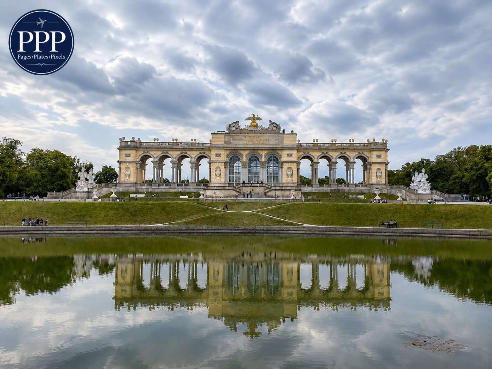
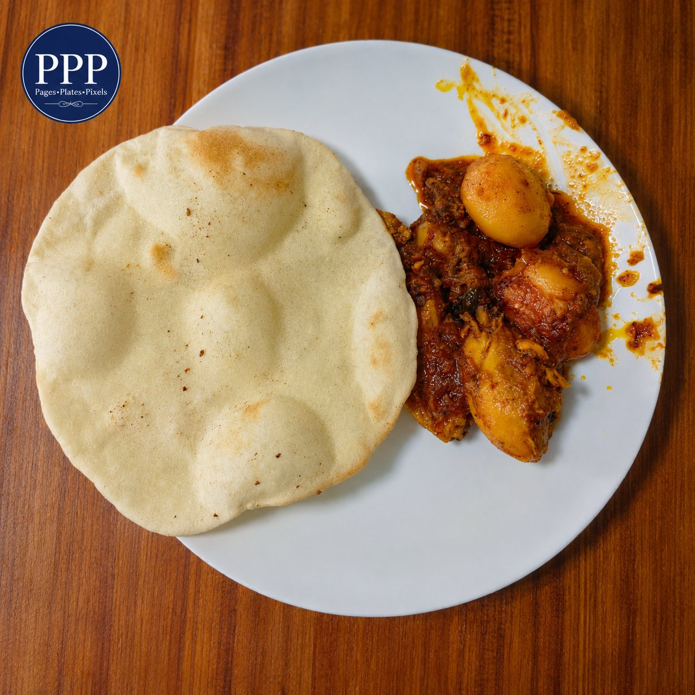
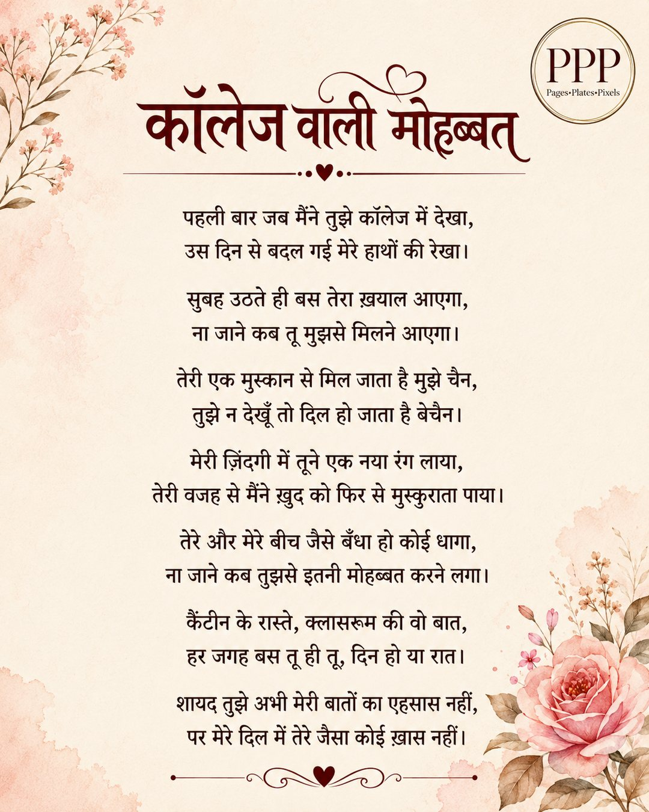
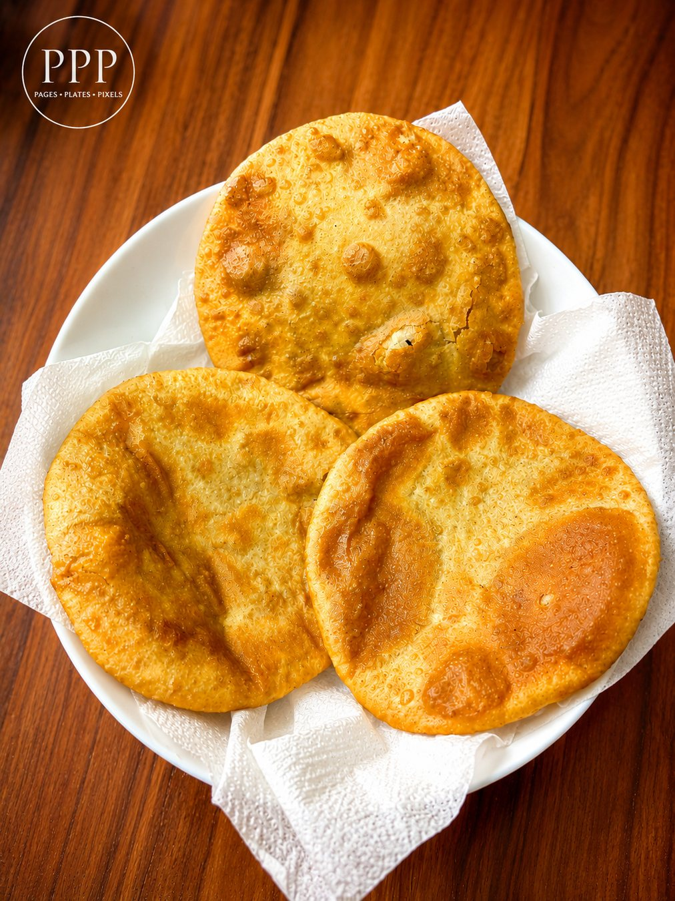
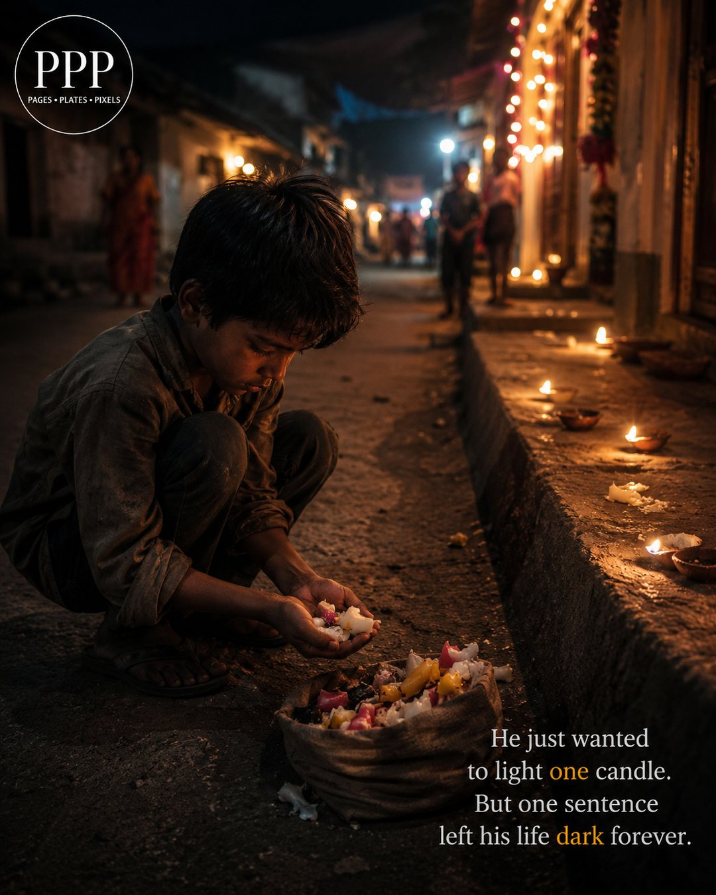

Photography
Gloriette, Schönbrunn Palace Gardens
A quiet reflection of Vienna’s royal beauty — calm sky, garden water, and the Gloriette standing gracefully above Schönbrunn.
Read more →Pages • Plates • Pixels
A personal corner for homemade food, short writings, mathematics, and everyday photos from the places I visit.
Latest posts

A quiet reflection of Vienna’s royal beauty — calm sky, garden water, and the Gloriette standing gracefully above Schönbrunn.
Read more →
Good spices, soft naan, and that homemade comfort feeling.
Read more →
A small romantic poem from the heart — simple words, soft feelings, and a little college nostalgia.
Read more →
A function so special, its rate of change is itself.
Read more →

Featured story
A Diwali story about poverty, kindness, and one sentence that stayed forever.
Read the story